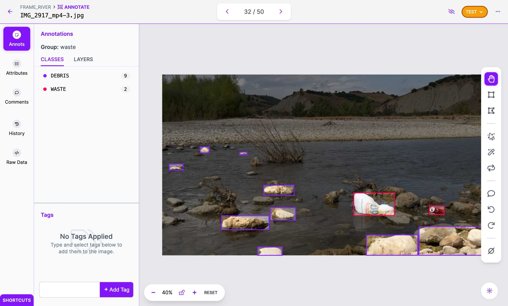

Object Detection
YOLO (You Only Look Once) is a real-time object detection algorithm first developed
in
2015. It is a single-stage object detector that uses a convolutional neural network
(CNN) to predict the bounding boxes and class probabilities of objects in input
images.
One of the key advantages of YOLO is that it processes the entire image in one
forward
pass, making it faster and more efficient than two-stage object detector methods, as
it
eliminates the need for multiple stages making it suitable for applications such as
real-time video analytics even on low-powered devices.
The basic idea behind YOLO algorithm can be broken down into several steps:
- Input image is passed through a CNN to extract features from the image.
- The features are then passed through a series of fully connected layers, which
predict class probabilities and bounding box coordinates.
- The image is divided into a grid of cells, and each cell is responsible for
predicting a set of bounding boxes and class probabilities.
- The output of the network is a set of bounding boxes and class probabilities for
each cell.
- The bounding boxes are then filtered using a post-processing algorithm called
non-max suppression to remove overlapping boxes and choose the box with the
highest
probability.
- The final output is a set of predicted bounding boxes and class labels for each
object in the image.
YOLO has been developed in several versions, including YOLOv1 through YOLOv8. Each
version has been built on top of the previous version
with enhanced features such as improved accuracy, faster processing, and better
handling
of small objects.
In this project In this project, we used the latest iteration of these YOLO models:
YOLOv8 released in 2023 by Ultralytics.
YOLO models are pre-trained on huge datasets such as COCO and ImageNet.
They provide highly accurate predictions on classes they are pre-trained on
and can also give the opportunity to fine-tune the model on a custom dataset.
Fine-tuning involves training the model on new data for a certain number of epochs.
During fine-tuning, the model adjusts its parameters to better adapt to the
characteristics and objects present in the dataset.
Dataset Preparation
The dataset used in this project was created using proprietary images and images
obtained
from RoboFlow Universe. Specifically, FloW-Img and WCB5G were
combined.
Annotations were standardized into two categories:
The YOLO format was used for annotations. The *.txt file are formatted with
one line for each object in the image following the provided format:
class x_center y_center width height
Bounding box coordinates should be in the normalized xywh format (ranging from 0 to 1).
If box coordinates are expressed in pixels, x_center and width should be divided by the
image width, and y_center and height should be divided by the image height. Class
numbers should be zero-indexed (start with 0).
Regarding the test split of the dataset, we recorded videos and sampled sampled every
x seconds. Then we manually labeled the classes using RoboFlow.
